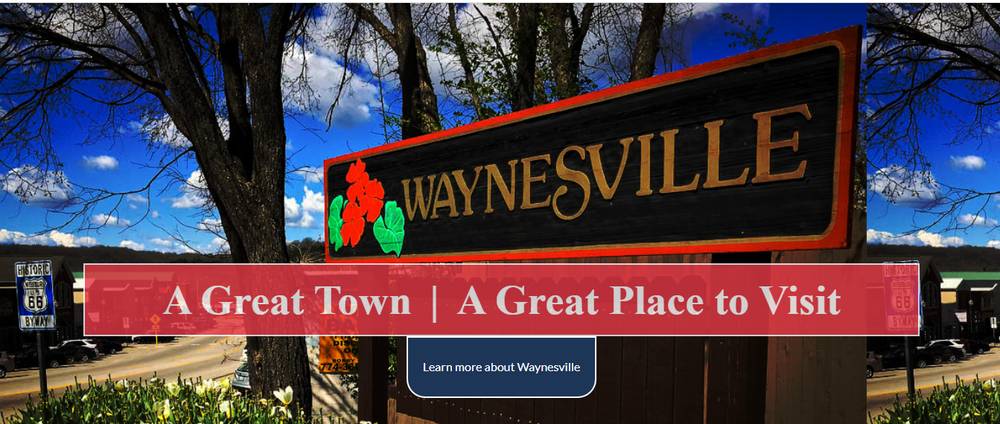

Fill-up for Hope
Fill-up for Hope is a program that donated gas cards to local cancer patients. I created the UI design with Adobe XD. In addition, I altered, resized, and created graphics with Photoshop and Illustrator. Then I built the site using HTML and CSS.
.png)

My Hometown Project
I created both the design and content for this project, however, the red, white and blue color pallet was required.
click image to see websiteToggle Mode Landing Page
This site follows the users viewing mode preferences or toggles dark or light mode on demand.

Frontend Mentor Project
Coded site from pdf file.

Color Picker
Connects with color api to display the appropriate colors.

Restaurant Landing Page
Embed maps and using blend modes

Roar Cycles
Changed from a bright background to this more muted color which represents the business better.


I lost my job due to the pandemic, however, I used this opportunity to deep dive into frontend development. I've always been involved in technology in some way or another, so expanding into frontend development is a natural progression. While learning with Scrimba I have access to a great community that helps whenever I need it. Having community helped me get better quicker.
Thank you very much for visiting my portfolio. If there is anything that I can clarify for you, please contact me at gloria_bradford2@yahoo.com. Please see my resume for more information.